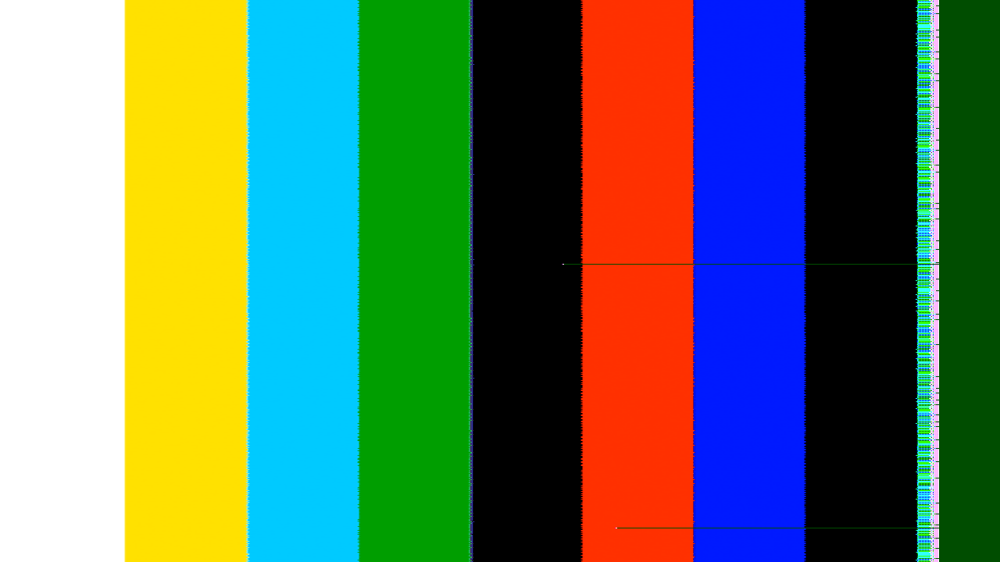
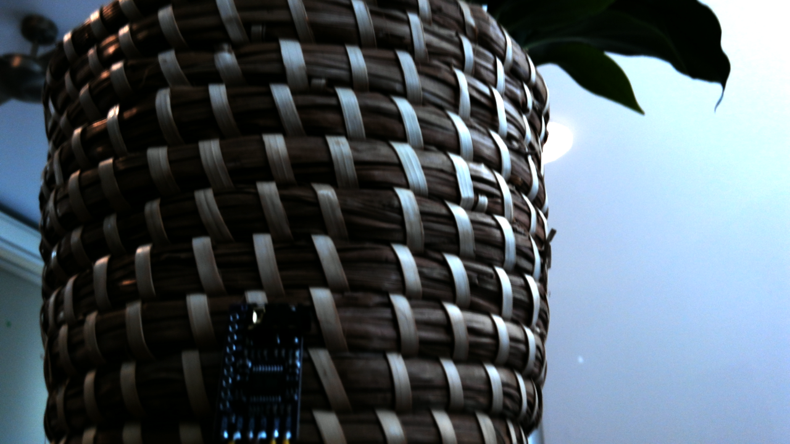

Investigating Corruption On The Far Right.
AR1335̸̰̩̪͓͗̔̔
At the end of First Contact, I was to flip a three-sided coin to choose between attaching another camera, getting the picture onto HDMI, or investigating corruption on the far right. Well, I could only find coins with either 2 or sides, and the corruption was bothering me, so it was a foregone conclusion.
The problem is quite specific. The KV260 captures a real scene from its AR1335 camera, but near the right edge the photograph gives way to a patterned strip, followed by a uniform dark-green margin. Of course, I did not expect it to work perfect first time; few things do.

Where I left it
My first suspicion was the distance in memory between the start of one line and the next:
The ‘corrupted’ strip is probably a stride thing, no?
That was already checked in the previous session. At 1280 pixels across and three bytes per RGB pixel, a tightly packed row occupies 3840 bytes. V4L2 reported that stride, and the running framebuffer writer had width 1280, height 720, stride 3840 and RGB8 format ID 20. The single-plane image size was 2,764,800 bytes: exactly 1280 × 720 × 3.
Those settings agree. They don't prove that every pixel reaching the writer is correct, or that every block is handling the end of a line correctly. They do make a simple disagreement over the configured row length a less convincing explanation.
The defect also persisted across five photographs in which I moved, and a smaller 640 × 480 capture had a damaged right edge. Getting a frame out at a lower resolution had solved the immediate stalled-capture problem. It hadn't solved this one.
Failure To Reproduce
The other useful result from First Contact was a clean test-pattern capture. One of the three synthetic lanes produced colour bars at the same 1280 × 720 RGB format and 3840-byte stride.

This rules out the duplicated video pipelines themselves being bogus - and hits at something happening at the junction from reality to fabric. The comparison establishes that this system can deliver a clean PNG at this format and stride. The camera path still has several places where it could go wrong.
AR1335 → AP1302 → MIPI CSI-2 RX → CSC → framebuffer writer → DDR → V4L2 → PNGAR1335 → AP1302 → MIPI CSI-2 RX
If my camera's busted, that would be pretty annoying. With a view to contradiction, let's assume not, and look rightward through the troublesome triple, to the the AP1302.
A quick refresher: according to the internet, the sentence "AP1302 is an imaging co-processor capable of processing up to 13 MP onsemi primary camera as well as a front facing camera" is gramatical. Sure. Here's a better explanation, provided by me, and double-checked by my Vivado doc search-enabled gpt-6.1-Sol: It's a chip that lives on the carrier, between the MIPI-CSI camera connector J7 and the k26 SoM, and provides pre-processing for image data arriving via that connector. One handy function of the AP1302 is - it has its own test-pattern generator. Well! Let's see if that makes it through my pipeline unscathed via v4l2-ctl -d /dev/v4l-subdev9 --set-ctrl=test_pattern=3

Ah, it arrives quite scathed, indeed! My reductio-ad-inconvenientum had been validated; most likely, the problem is downstream of the camera. Hooray!
Counting Pixels
As the next step, a quick peek at the CSI driver's status report revealed that it had been quietly complaining the whole time. In one receiver interval it counted 21,594 word-count errors over 21,600 lines. The reported packet size was 2560 bytes, appropriate for 1280 pixels of YUV422. AMD's receiver guide describes the word-count error as receiving fewer bytes than the packet header indicates.
Oops! I wonder why! Oh, it's a clocking problem, isn't it.
Increasing the ISP's clock-post timing did not remove the defect. A live continuous-clock-bit experiment did not remove it either, and that register write alone doesn't establish that continuous-clock operation was achieved. The original timing values and normal camera input were restored afterwards.
It Was A Clocking Problem
The design's video clock runs at 100 MHz. I wonder why I chose that, it's not even a nice round number like 128. Well, as Dr. Ross revealed to me (only after I'd already thought to ask...), with the configured 896 Mb/s per lane, four lanes, two pixels per clock and 16-bit YUV422, AMD's minimum-video-clock calculation gives 112 MHz. Indeed, the AP1302 reports 0x0380 (896 if you like to use decimal) as the value of its link-rate register, as intended.
Of course.
Breaking news... bug in FPGA design caused by misconfigured clock. More at
0xA
Not gonna lie... it's kinda unoriginal. I was hoping something more interesting would have gone wrong. Oh well.
Giving the receiver enough clock
Well, I tried cranking it up to 150 MHz. Vivado built it, but Linux quietly rounded the real clock to 142.857 MHz - thereby wasting my time, as the clock wizard was still built expecting 150MHz, and therefore its own personally generated clock would be off by nearly a full 10 MHz, which is roughly exactly the same problem as before. So I tried again with 125 MHz, which Linux was happy to supply; indeed, the reported frequency generated is a spectacularly near miss 124,999,999 Hz, so, well within any reasonable tolerance.
The 125 MHz design completed routing with 0.707 ns[1] setup slack and 0.010 ns hold slack. Now let's see if those bars still have scars:
Now the receiver reported 48,240 lines without a single word-count-error entry. It was, indeed, a clocking problem.
Result

Corruption on the far right has, for once, been entirely removed. The design isn't wholly bug-free at the current time; A few capture attempts stalled and needed a retry, and I haven’t investigated that yet. But next time I will try to display live video over HDMI, as that sounds more fun, and all my coins have sides.
□